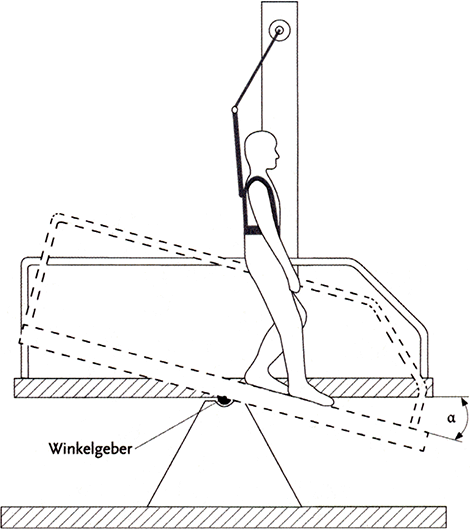

Eine Prüfperson mit Prüfschuhen begeht in aufrechter Haltung mit Schritten einer halben Schuhlänge vor- und rückwärts den zu prüfenden Bodenbelag, dessen Neigung vom waagerechten Zustand beginnend bis zum Winkel des Ausrutschens (a) gesteigert wird (siehe Abbildung 1). Dieser sogenannte Winkel des Ausrutschens ist der Winkel, bei dem die Prüfperson nicht mehr sicher gehen kann und zu rutschen beginnt. Der Winkel des Ausrutschens wird auf mit Gleitmittel bestrichenem Bodenbelag ermittelt. Der erreichte mittlere Winkel des Ausrutschens dient anschließend zur Beurteilung des Grades der Rutschhemmung (siehe Tabelle 1). Subjektive Einflüsse auf den Winkel des Ausrutschens werden durch ein Verifizierungs- und Korrekturverfahren eingegrenzt.

Abb. 1: Prüfeinrichtung (Schiefe Ebene) mit Sicherheitseinrichtung
Tab. 1: Zuordnung der korrigierten mittleren Winkel des Ausrutschens zu den Klassen der Rutschhemmung
| Korrigierter mittlerer Winkel des Ausrutschens | Klasse der Rutschhemmung (R-Gruppe) |
| 6° bis 10° | R 9 |
| über 10° bis 19° | R 10 |
| über 19° bis 27° | R 11 |
| über 27° bis 35° | R 12 |
| über 35° | R 13 |
Der Probekörper wird mit einer Paste bündig abgeglichen und seine Masse vor und nach dem Abgleichen gemessen. Aus der Massendifferenz und der Dichte der Paste wird das Volumen des Verdrängungsraumes errechnet. Bodenbeläge mit Verdrängungsraum sind mit dem Kennzeichen "V" in Verbindung mit der Kennzahl für das Mindestvolumen des Verdrängungsraums versehen und werden in die in Tabelle 2 genannten Gruppen unterteilt.
Tab. 2: Zuordnung der Bezeichnung des Verdrängungsraumes zu den Mindestvolumina
| Bezeichnung des Verdrängungsraumes | Mindestvolumen des Verdrängungsraumes [cm³/dm²] |
| V 4 | 4 |
| V 6 | 6 |
| V 8 | 8 |
| V 10 | 10 |
| 2 | gilt nicht für nassbelastete Barfußbereiche |